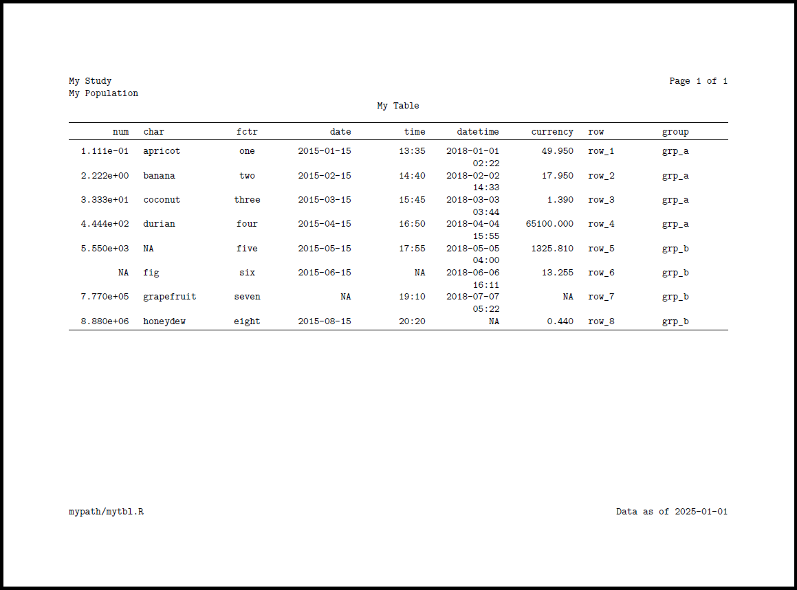

A core feature of {docorator} is flexible header and footer options
via the header and footer arguments in the
as_docorator() function. These are made possible via the
underlying fancyhdr
latex library. This makes it possible to have multiple lines of headers
and/or footers, as well as multiple positions of text within each.
Specifying headers
The header argument accepts a fancyhead
object. The fancyhead object accepts a series of
fancyrow objects. These correspond to each line of text in
the header. Within a fancyrow, you can optionally specify
the left, center, and right text (NA indicates a blank
position). Some examples are below.
Specifying footers
The footer argument of as_docorator()
accepts a fancyfoot object. This behaves identically to
fancyhead above by accepting a series of
fancyrow objects for each line of the footer.
Available utilities for standard or automated information
There are several functions available for features like page
numbering and time stamps. These are prefixed with
doc_*().
Add automatic page numbering in upper left
fancyhead(
fancyrow(left = "My study", center = NA, right = doc_pagenum())
)Add file path in bottom left and datetime in bottom right
fancyfoot(
fancyrow(left = doc_path(), center = NA, right = doc_datetime())
)Putting it all together
gt::gtcars |>
dplyr::slice_head(n = 10) |>
dplyr::select(mfr, model, year, msrp) |>
gt::gt(
groupname_col = "mfr",
row_group_as_column = TRUE
) |>
as_docorator(
display_name = "mytbl",
header = fancyhead(
fancyrow(left = "My Study", center = NA, right = doc_pagenum()),
fancyrow(left = "My Population", center = NA, right = NA),
fancyrow(left = NA, center = "My Table", right = NA)
),
footer = fancyfoot(
fancyrow(
left = "path/mytbl.pdf", center = NA, right = "Data as of 2025-01-01"
)
)
) |>
render_pdf()
Note about sizing
{docorator} will automatically adjust the allowed height for headers and footers according to the lines of text required. If many lines of headers and/or footers are specified, this cuts down on the available height for the table/figure. Additionally, {docorator} does not auto-wrap long lines of text, so it is recommended you keep your left, right, and center text as brief as possible.
Please file an issue if you discover unexpected results or problems related to headers and footers.